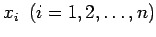
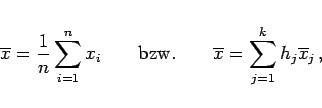
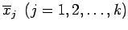
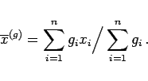
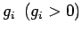

Inhalt Index DeskTop Bronstein

 Wahrscheinlichkeitsrechnung und Mathematische Statistik Theorie der Meßfehler Meßfehler und ihre Verteilung Meßfehlereinteilung nach quantitativen Merkmalen
Wahrscheinlichkeitsrechnung und Mathematische Statistik Theorie der Meßfehler Meßfehler und ihre Verteilung Meßfehlereinteilung nach quantitativen Merkmalen


Der wahre Wert xw einer meßbaren Größe ist im allgemeinen unbekannt. Als Schätzwert für xw wird man den Erwartungswert der Zufallsvariablen wählen, deren Realisierung durch die Meßwerte  erfolgt. Demzufolge bieten sich als Näherungswerte für xw die folgenden Mittelwerte an:
|  | (16.201) |
wenn die Meßwerte in k Klassen mit den absoluten Häufigkeiten hj und den Klassenmittelwerten  eingeteilt worden sind.
|  | (16.202) |
Dabei sind die einzelnen Meßwerte mit dem Gewichtsfaktor  gewichtet worden.